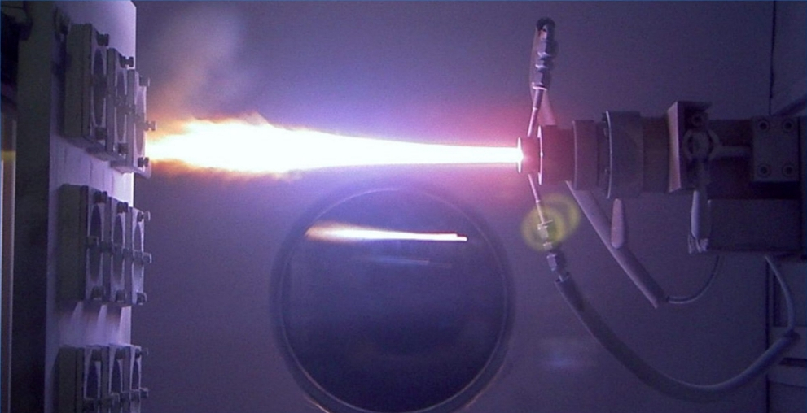

Плазмотрон обыкновенный
Краткое опиcание товара
Данный плазматрон умеет обыкновенно плазмотронить, прост в эксплуатации и обслуживании.
Подробное описание товара
Плазмотрон создает плазму, имеет прочную рукоятку, надежный корпус из
термостойкого сплава. Не нуждается в сертификации из за своей
не
большой мощности. Минимальный расход электроэнергии во время работы
оборудованием позволяет экономить существенные объемы
потребляемого электричества, что приятно порадует его обладателя. Также
отсутствует потребность в высоком напряжении питающей сети,
что делает аппарат выгодным помощником в местах, где питание нестабильно.
В полевых условиях плазмотрон обеспечит многократную
экономию на
расходе топливных ресурсов генератора.
Характеристики товара
- Напряжение питающей сети, частота — 220В, 50 Гц
- Пределы регулировки тока −5-25А
- Максимальный потребляемый ток — 18А
- Фактор мощности — 0,7
- Отдача — 1,5
- Максимальная толщина резки — 6 миллиметров
- Плазмотрон имеет класс изоляции — Н
- Масса оборудования — 12,5 килограмма
Вперед ⇒